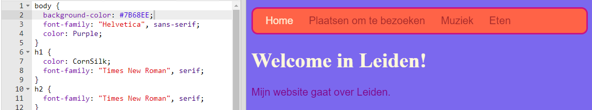

Zoals je al eerder hebt gezien, kun je de namen van veel verschillende kleuren intypen. De browser zal ze herkennen. Maar een meer gebruikelijke manier om kleuren in te stellen is om iets te gebruiken dat hex-codes heet ('hex' is een afkorting van hexadecimaal, een speciale manier om te tellen).
.css in de naam.
body zet je de achtergrondkleur op de hex-code #7B68EE:
background-color: #7B68EE;
N.B. als je een Mac gebruikt, kun je # typen door tegelijkertijd op de alt en de 3 toetsen te drukken.
Je website zou nu een paarse achtergrond moeten hebben.

Op de website van wikikids kun je ook een aantal kleurcodes vinden. Met kleurcodes kan je elke kleur maken, zelfs als deze niet op een lijst met kleurnamen staat.
#. Dit vertelt de browser dat het een hex-code is in plaats van een kleurnaam. De rest van de code bestaat uit zes tekens. Dit kan elk nummer zijn van 0 tot 9 en elke letter van A tot F.
Om de perfecte kleur te krijgen, moet je veel experimenteren. Gelukkig zijn er online veel tools waarmee je de hex-code kunt krijgen voor elke gewenste kleur.